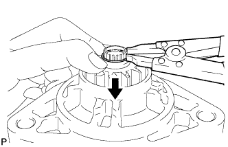
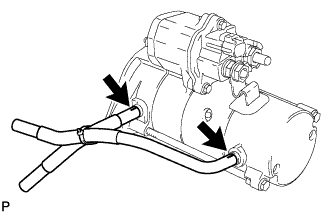
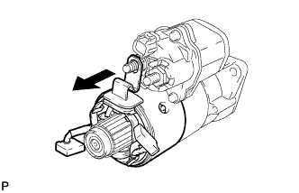
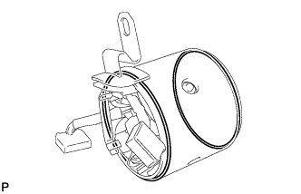
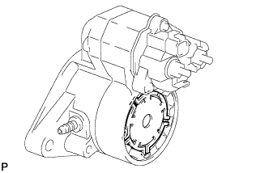
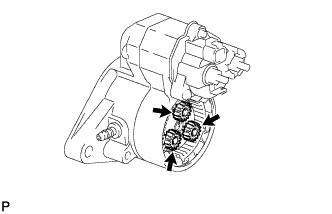
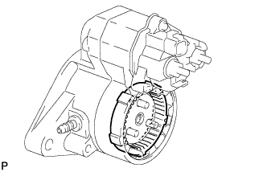
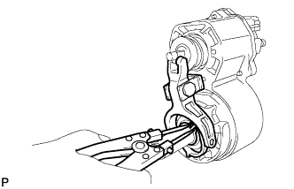

STARTER > DISASSEMBLY |
| 1. REMOVE STARTER CLUTCH PINION |
 |
Using snap ring pliers, remove the snap ring.
Remove the pinion stop collar, starter clutch pinion and starter drive spring.
| 2. REMOVE STARTER BRUSH HOLDER ASSEMBLY |
 |
Remove the 2 starter hoses from the starter.
 |
Remove the nut from terminal C.
Remove the 2 through bolts and 2 screws, then remove the commutator end frame from the starter yoke.
 |
Using a screwdriver, hold the starter brush spring back and disconnect the 4 starter brushes from the brush holder.
Remove the starter brush holder from the starter armature.
| 3. REMOVE STARTER YOKE ASSEMBLY |
 |
Remove the starter yoke.
 |
Remove the 2 O-rings from the starter yoke.
| 4. REMOVE STARTER ARMATURE ASSEMBLY |
 |
Remove the starter armature from the starter plate.
| 5. REMOVE STARTER INTERNAL GEAR |
 |
Remove the starter plate.
 |
Remove the starter washer.
 |
Remove the 3 starter planetary gears.
 |
Remove the starter internal gear.
| 6. REMOVE STARTER DRIVE HOUSING ASSEMBLY |
 |
Remove the 2 bolts and starter drive housing from the magnet starter switch.
| 7. REMOVE STARTER CLUTCH SUB-ASSEMBLY |
 |
Using snap ring pliers, remove the snap ring.
Remove the pinion drive lever and 3 washers.
Remove the starter clutch from the magnet starter switch.